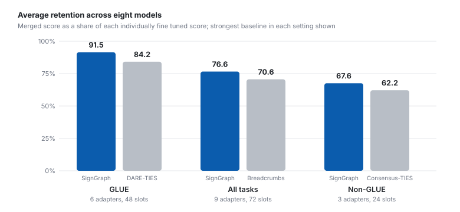

SignGraph:
Merging models by the patterns their signs make
TL;DR
Model merging combines several fine tuned models into one without retraining or access to their data. Popular methods such as TIES resolve conflicts one parameter at a time, by majority sign vote and hard magnitude pruning.
SignGraph looks at the pattern of signs a parameter has across all task vectors. Parameters with the same pattern face the same conflict, so they are grouped, related groups share information through PageRank diffusion on a Hamming graph, and a soft gate suppresses weak groups. Only one value, the density, is tuned.
Across eight models from 0.5B to 8B and 144 evaluation slots, SignGraph wins 53% of slots, more than all eight baselines combined, and beats every baseline in paired tests (p < 0.001).
Merge
How much of each fine tuned model survives the merge?
Six GLUE adapters merged into one model, averaged over eight models
91.5%retention, against 84.2% for the best baseline
Compare
Is the gain consistent, slot by slot?
Wilcoxon signed rank over 144 paired slots
+8.5points over the closest baselines, at least 103 of 144 slots won against each
Open model hubs host tens of thousands of adapters, each fine tuned for one skill: sentiment, safety classification, code, translation. Users often want one model with several of these skills, and joint multi task training is expensive, needs every original dataset and must be repeated whenever a task is added. Model merging avoids all of this by combining models directly in parameter space.
The basic object is the task vector, the difference between a fine tuned model and its base. Task Arithmetic showed that task vectors can be added[1]. TIES improved on this with magnitude pruning, a majority vote on the sign of each parameter and averaging of the values that agree[2], and DARE replaced pruning with random dropout and rescaling[3]. All of these treat each parameter position on its own.
The idea: sign patterns carry structure
Take a parameter and write down the sign it has in each of N task vectors, for example [+, +, −, +]. This sign fingerprint describes the parameter's cross task agreement, independently of its magnitude. A parameter with [+, +, +, +] has full consensus; one with [+, −, +, −] has systematic disagreement. Every parameter with the same fingerprint faces exactly the same merging problem, so it makes sense to treat them as a group. A group's mean is then estimated from thousands of parameters instead of one, which is most valuable for rare, conflicted patterns.

Method
Step 1
Cluster parameters by sign fingerprint
After flipping any task vector that is strongly anti correlated with the others, a rare case where two adapters learn the same solution with opposite signs, SignGraph averages the task vectors and assigns every parameter to one of 2N clusters by its fingerprint. In every model tested, all 2N clusters are occupied, 64 of 64 for six adapters and 512 of 512 for nine.
Step 2
Link clusters whose patterns are close
Clusters become nodes of a graph, with an edge between two clusters whose fingerprints differ in one or two signs, weighted by the inverse of that Hamming distance. Two clusters at distance one disagree about exactly one task's vote, so they are the most reliable sources of shared signal. Hamming distance is scale free and depends only on agreement structure, which is the information SignGraph is built to use.
Step 3
Diffuse consensus and shift parameters
Personalised PageRank[4] runs for three steps over the cluster means, mixing each cluster's own signal with its neighbours'. Each parameter then moves towards its cluster's smoothed mean, so clusters that were outliers relative to their neighbours receive the largest correction.
Step 4
Suppress weak clusters softly
Each cluster's importance is its size times its mean magnitude. A sigmoid gate centred at a quantile set by the density ρ scales parameters down smoothly, instead of zeroing everything below a hard threshold. The whole pipeline costs about the same as TIES, since the graph has only 2N nodes. Every other hyperparameter is fixed before evaluation, and a sensitivity sweep moves results by less than one point.
Baselines and setup
SignGraph is compared with eight training free merging methods: TIES[2], DARE TIES[3], DELLA[5], Model Breadcrumbs[6], Fisher merging[7], Task Arithmetic[1], simple averaging[8] and Consensus TIES, a conflict aware TIES variant. Each model is a LoRA[9] adapter of rank 16, trained on Llama 3 and Qwen 2.5 / Qwen 3 models from 0.5B to 8B parameters. The main metric is retention: the merged model's score on a task as a share of the score of the model fine tuned for that task alone. Densities are chosen on a validation split and all results are reported on held out test splits, with the same protocol for every method.
| Setting | Adapters merged | Slots | Tasks |
|---|---|---|---|
| GLUE | 6 | 48 | SST-2, CoLA, RTE, QQP, MNLI, QNLI |
| All tasks | 9 | 72 | GLUE, safety, code, Yoruba to English |
| Non-GLUE | 3 | 24 | Safety, code, translation |
Table 1. Evaluation settings. A slot is one model and one task.
Experiments
Experiment 1
Does SignGraph retain more of each fine tuned model?

SignGraph has the highest average retention in all three settings. On GLUE it wins 27 of 48 slots and leads on five of six tasks, with the largest margins on RTE (+11.2 points) and CoLA (+4.0). With nine adapters it wins 42 of 72 slots, more than four times the next method, and leads on eight of nine tasks.
| Method | Average | CoLA | MNLI | QNLI | QQP | RTE | SST-2 |
|---|---|---|---|---|---|---|---|
| SignGraph | 91.5 | 91.3 | 84.5 | 90.8 | 89.1 | 94.0 | 99.2 |
| DARE TIES | 84.2 | 85.3 | 80.8 | 80.0 | 87.1 | 82.8 | 89.2 |
| Breadcrumbs | 83.0 | 87.3 | 81.6 | 77.5 | 88.3 | 80.4 | 83.1 |
| Fisher | 78.1 | 57.2 | 84.2 | 75.8 | 85.1 | 81.5 | 84.6 |
| Consensus TIES | 77.1 | 72.8 | 73.5 | 73.8 | 89.6 | 73.9 | 78.2 |
| TIES | 76.6 | 72.9 | 76.3 | 72.8 | 89.4 | 72.9 | 74.9 |
| DELLA | 68.3 | 69.1 | 67.7 | 63.4 | 84.9 | 58.7 | 66.3 |
Table 2. Average retention (%) per task on GLUE, across eight models.
Experiment 2
Are the gains consistent?
Paired Wilcoxon signed rank tests over all 144 slots, with Holm correction, are significant against every baseline at p < 0.001. Because the same models and tasks appear in several settings, the slots are not fully independent, so these tests are supporting evidence rather than proof.
| Baseline | Mean gap (points) | Cohen's d | Slots won / lost |
|---|---|---|---|
| Breadcrumbs | +8.5 | 0.50 | 114 / 28 |
| DARE TIES | +8.5 | 0.58 | 120 / 24 |
| Consensus TIES | +11.4 | 0.54 | 103 / 39 |
| TIES | +11.4 | 0.54 | 107 / 35 |
| Fisher | +12.6 | 0.66 | 124 / 18 |
| DELLA | +17.2 | 0.62 | 110 / 32 |
Table 3. SignGraph against each baseline over 144 paired slots.
Experiment 3
When does merging work best?
The advantage grows with adapter quality. On weak adapters, below 78% individual accuracy, every method struggles and SignGraph trails the per slot best baseline by 2.3 points. On very strong adapters, above 92%, it wins 58% of slots and leads by 2.9 points. Strong adapters have more coherent sign patterns, which is exactly what clustering exploits. In practice, good individual adapters matter for good merges.
| Adapter quality | Slots | SignGraph win rate | SignGraph | Best baseline per slot |
|---|---|---|---|---|
| Weak (< 78%) | 24 | 42% | 49.4 | 51.8 |
| Moderate (78 to 86%) | 20 | 55% | 90.1 | 88.7 |
| Strong (86 to 92%) | 22 | 50% | 90.6 | 88.8 |
| Very strong (> 92%) | 12 | 58% | 93.0 | 90.1 |
Table 4. Retention (%) by the accuracy of the individual adapters. The best baseline is chosen separately for each slot.
Experiment 4
Which components matter?
Removing a component costs little when GLUE adapters dominate the merge, but a lot when they do not. With the three non GLUE adapters alone, removing graph diffusion costs 5.5 points, removing the consensus shift 5.3 and replacing soft suppression with a hard threshold 8.2. Code generation drives this: without diffusion its retention drops 16.4 points. A TIES variant given SignGraph's soft gate still falls below SignGraph on all four models tested, so the clustering and diffusion contribute beyond the gate.
| Removed component | All tasks | Non-GLUE |
|---|---|---|
| Graph diffusion | −1.3 | −5.5 |
| Consensus shift | −1.5 | −5.3 |
| Soft suppression | −0.2 | −8.2 |
Table 5. Change in average retention (points) when one component is removed, at density 0.01.
One finding is a challenge for the whole field rather than for SignGraph. When six classification adapters are merged with three generative ones, the classification adapters dominate the sign patterns and safety retention falls to 58.8%; merged alone, the three non GLUE adapters reach 100.9%. No method handles this heterogeneous case well, which makes it a clear target for future work.
Citation
Please cite this post as
Paul Trust. “SignGraph: Merging models by the patterns their signs make.” February 2026. https://paultrust26.github.io/paultrust/blog/signgraph.html
or in BibTeX
@misc{trust2026signgraphblog,
title = {{SignGraph: Merging models by the patterns their signs make}},
author = {Trust, Paul},
year = {2026},
month = feb,
howpublished = {\url{https://paultrust26.github.io/paultrust/blog/signgraph.html}},
note = {Blog post}
}References
- Editing Models with Task Arithmetic[PDF]Ilharco, G., Ribeiro, M.T., Wortsman, M., Schmidt, L., Hajishirzi, H. and Farhadi, A., 2023. International Conference on Learning Representations (ICLR).
- TIES-Merging: Resolving Interference When Merging Models[PDF]Yadav, P., Tam, D., Choshen, L., Raffel, C. and Bansal, M., 2023. Advances in Neural Information Processing Systems (NeurIPS).
- Language Models are Super Mario: Absorbing Abilities from Homologous Models as a Free Lunch[PDF]Yu, L., Yu, B., Yu, H., Huang, F. and Li, Y., 2024. International Conference on Machine Learning (ICML).
- The PageRank Citation Ranking: Bringing Order to the WebPage, L., Brin, S., Motwani, R. and Winograd, T., 1999. Stanford InfoLab Technical Report.
- DELLA-Merging: Reducing Interference in Model Merging through Magnitude-Based Sampling[PDF]Deep, P.T., Bhardwaj, R. and Poria, S., 2024. arXiv preprint arXiv:2406.11617.
- Model Breadcrumbs: Scaling Multi-Task Model Merging with Sparse Masks[PDF]Davari, M. and Belilovsky, E., 2023. arXiv preprint arXiv:2312.06795.
- Merging Models with Fisher-Weighted Averaging[PDF]Matena, M.S. and Raffel, C.A., 2022. Advances in Neural Information Processing Systems (NeurIPS).
- Model Soups: Averaging Weights of Multiple Fine-tuned Models Improves Accuracy without Increasing Inference Time[PDF]Wortsman, M., Ilharco, G., Gadre, S.Y., Roelofs, R., Gontijo-Lopes, R., Morcos, A.S., Namkoong, H., Farhadi, A., Carmon, Y., Kornblith, S. and Schmidt, L., 2022. International Conference on Machine Learning (ICML).
- LoRA: Low-Rank Adaptation of Large Language Models[PDF]Hu, E.J., Shen, Y., Wallis, P., Allen-Zhu, Z., Li, Y., Wang, S., Wang, L. and Chen, W., 2022. International Conference on Learning Representations (ICLR).